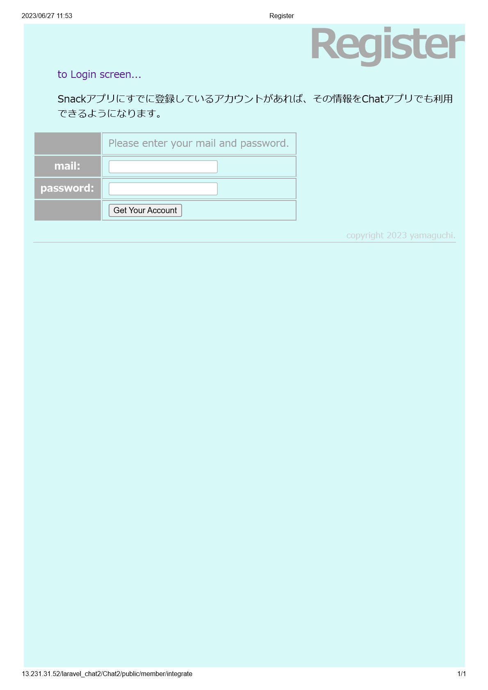

My Projects
Member Integration Application (2023.6)
So far, I have created my own CHAT and SNACK apps.
However, it would be cumbersome for users to register new members in each.
So, if member information is registered in either one of the applications,
you can easily integrate your member information by simply entering your email and password with this API.
*Technical Specifications: PHP, Laravel, MySQL, Postman
Github link (snack application)

Snack Application (2023.3~present)
This application is designed to share information about snacks and sweets from different countries.
The snacks sold in Japan, my home country, are completely different from the ones sold here in Canada.
Both countries have delicious snacks, but while in Japan, I couldn't know about Canadian snacks, and the same would be true for people in Canada.
So, I created this application.
It features functionalities such as "like" button, search function, and recommended snacks based on user preferences.
*Technical Specifications: PHP, Laravel, JavaScript, MySQL, HTML, CSS
Github link (snack application)
Application link (snack application)


Chat Application (2023.5)
This is an application that allows users to communicate with each other.
It has basic features such as posting, replying, and deleting messages while maintaining simplicity.
*Technical Specifications: PHP, Laravel, MySQL, HTML, CSS
Github link (chat application)
Application link (chat application)


Music Player (2022.12)
This is a music player that compiles free Halloween-themed music downloads.
The application features random music playback and changes the illustrations when the player is playing or paused.
*Technical Specifications: JavaScript, HTML, CSS